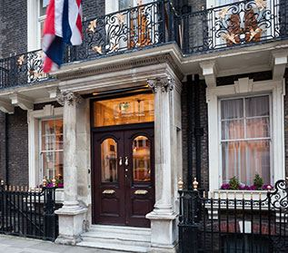
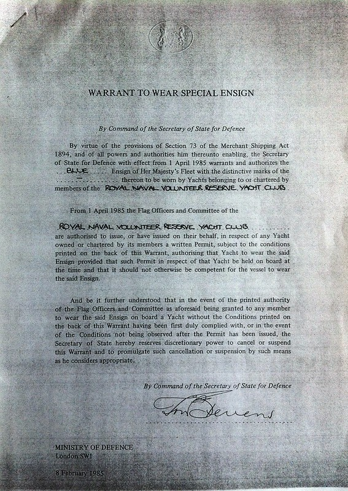
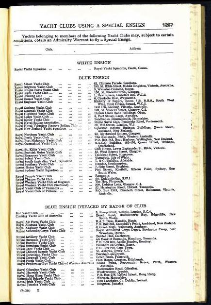

Royal Naval Volunteer Reserve Yacht Club
About Us
Since 1947
History of the RNVR Yacht Club

The RNVR Yacht Club is a recognised Service Yacht Club and developed from the Sailing Section of the RNVR Officers Club, known as The Naval Club, 38 Hill Street, Mayfair, London. The Naval Club was wound up in 2021.
The initial activity, from 1947, was one-design sailing in Fireflies. Teams raced against various other clubs and naval establishments. In 1949 the Club presented to the RYA a silver cup for an annual competition of Fireflies. In 1950 the Club joined the Association of Service Yacht Clubs and won the Gold Cup in Seaview Mermaids in 1951, 1952 and 1955.
In the 1950's and 1960's teams raced successfully each year in whalers at Shotley against HMS Ganges, Lloyds, Norfolk RNR and Suffolk RNVR for the Drawmer Dram Trophy.
From 1966–75 regular weekend regattas were held in Mermaids at Seaview. Day sailing and cruising were both encouraged in the Club-owned boats, “Rabmoewe”, a shallow draft sloop at Burnham, a Sharpie and a 16-foot dinghy at Kingston, and a 16-foot day boat in the Hamble. Boats were chartered, such as a SCOD at Cowes, a Royal Burnham OD, and yachts held at naval establishments including 100 × 50 sq m “Windfalls.” Chief amongst those was “Marabu”, in which the Club raced and cruised extensively and in 1955 won the Fastnet Inter-Services Cup.
In addition, the Club successively owned Tachia, a 9-ton sloop, then yachts all bearing the name Volunteer, first a 13-ton cutter, next an S&S 34 cruiser/racer and thirdly a Westerly Fulmar 32, bought new in 1985, followed by a Westerly Storm 33 in 1990. The next Volunteer, a 36-foot Jeanneau Sun Odyssey, was bought new in 1999 and proved just as popular with members for cruising British and French waters. The most recent Volunteer was a Beneteau First 40.7 cruiser/racer which took part in the Fastnet Race in both 2015, crewed by an RNR crew, and 2019, crewed by Club members, and has recently been sold.
In recent years many members have acquired their own boats, adding to the prestige of the Club by successfully racing and cruising at home and abroad. Since 1976, annual meets for members in their yachts have been held mostly on the South Coast, on the northern coast of France and visiting the Channel Islands.
In Spring 2020 the Royal Naval Tot Club of Antigua and Barbuda conferred on the Club the privilege of becoming a UK Division. This enabled the Club to hold a Naval Tot ceremony online every week during the Covid-19 lockdown in order that members could regularly meet together remotely.
Club archive
The Blue Ensign Warrant
Here is a copy of the Blue Ensign Warrant, together with the Club's entry in the 1958 Navy List.



Club Admiral
The RNVR Yacht Club's Admiral, HRH Prince Michael of Kent GCVO
In 2011, the Club commissioned the well-known portrait painter and war artist, Arabella Dorman, to undertake a portrait of its Admiral, HRH Prince Michael of Kent GCVO, the cost of which was fully funded by members' individual contributions. The portrait was unveiled by Prince Michael in December 2011 and hung in the Reception area of The Naval Club at 38 Hill Street, Mayfair, London W1, with which the Club had been affiliated since its foundation until its closure in 2021. We are in the process of finding a new “home” for our Club where we hope to rehang the portrait.